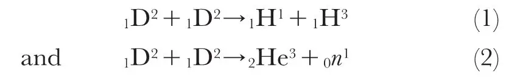
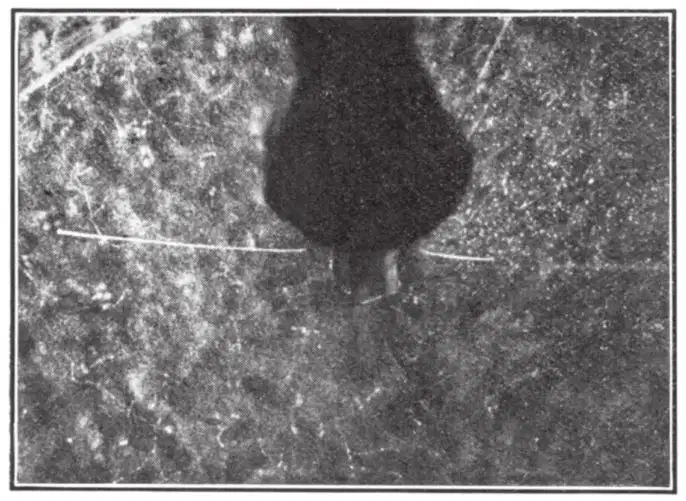

中文
中文P. I. Dee
Editor’s Note
The recent experiments of Oliphant, Harteck and Rutherford with “diplons” (nuclei of the hydrogen isotope deuterium) suggested that they might react in pairs to form 3He and 3H. A colleague at the Cavendish Laboratory, Philip Ivor Dee, here reports partial confirmation from cloud-chamber experiments. The nuclear reaction of two deuterium nuclei is one of the most basic in nuclear physics, featuring in the fusion processes in the Sun. 中文
IT has been shown by Oliphant, Harteck and Lord Rutherford in a recent letter1 that the bombardment by high-velocity diplons of compounds containing diplogen gives rise to three groups of particles—two groups of equal numbers of singly-charged particles of ranges 14.3 cm. and 1.6 cm., together with neutrons of maximum energy of about three million volts. They suggest as possible explanations of these results the reactions:

an atom of 1H3 of 1.6 cm. range and a proton of 14.3 cm. range satisfying the momentum relations in reaction (1). In this reaction it is to be expected that the proton and the isotope of hydrogen of mass 3 would recoil in opposite directions, except for a small correction due to the momentum of the captured diplon. The cloud track method is extremely suitable for an examination of this possibility, and I have recently taken expansion chamber photographs of the disintegration particles resulting from the bombardment of a target of “heavy” ammonium sulphate with diplons, to see if further information can be obtained. 中文
The first set of experiments was made with a thin target contained in an evacuated tube at the centre of the chamber. Two opposite sides of the end of this tube were closed with mica windows of 6.3 mm. and 11.4 cm. stopping power respectively. The chamber was filled with a suitable mixture of helium and air to increase the lengths of the tracks of the short particles. Under these conditions, the particles of 14.3 cm. range emerging through the thick window and the particles of 1.6 cm. range emerging through the thin window end in the chamber and the usual reprojection permits precise determination as to whether the two tracks are co-planar and of the ranges. Owing to the fine structure of the grid supporting the thin window the efficiency of collection of pairs cannot be high; also the companion to a 14.3 cm. particle passing through the thin window would not be able to pass through the opposite thick window. In spite of these difficulties, opposite pairs of tracks of about 14.3 cm. and 1.6 cm. range are observed with far greater frequency than could be attributed to chance. The photograph reproduced as Fig. 1 is a fortunate example, the short track on the right being due to the new hydrogen isotope of mass 3. Detailed measurements of the lengths of the tracks and the angles between them are being made and will be published later. 中文

Fig. 1 中文
To investigate the neutron emission, a second series of experiments has been made in which a target of the same material contained in a lead tube of 3 mm. wall thickness was bombarded in the same manner, the chamber being filled with a mixture of 50 percent helium in air. Under these conditions, thirty-one recoil tracks originating in the gas have been photographed. Assuming that these are due to impacts with neutrons, the latter appear to constitute an approximately homogeneous group of maximum energy of about 1.8 million volts. This energy appears to be in fair agreement with reaction (2) on substitution of the mass of 2He3, which can be estimated from consideration of the energies of the short-range products resulting from the transformation of 3Li6 by protons2,3,4. The 2He3 group of reaction (2) with a possible range of about 5 mm. would not pass through the thinnest window used in these experiments, but special arrangements are being made to search for them in an expansion chamber. 中文
These experiments are the first to be made with a new discharge tube constructed following a design due to Dr. Oliphant. I should like to acknowledge the much valuable advice which Dr. Oliphant has always so readily given me in the course of construction of this tube. I am also indebted to him for preparing the diplogen targets used in these experiments. 中文
(133, 564; 1934)
P. I. Dee: Cavendish Laboratory, Cambridge.
References:
1. Nature, 133, 413, March 17, 1934.
2. Proc. Roy. Soc., A, 141, 722; 1933.
3. Nature, 132, 818, Nov. 25, 1933.
4. Nature. 133, 377, March 10, 1934.